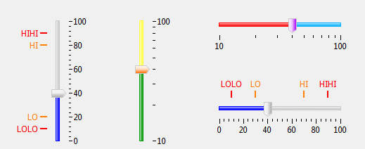

A slider widget with scale and marker that can be used to write and read a PV.
At runtime, dragging the thumb to increase/decrease value in step increment. Clicking or pressing the track to increase/decrease the value in page increment. It also supports changing value with keyboard while it is focused. (It can be focused by clicking its thumb). Use Up/Down key for vertical slider or Left/Right key for horizontal slider to increase/decrease value in step increment. Use PageUp/PageDown key to increase/decrease value in page increment.
It has two Runtime configurable properties which can be changed at runtime from context menu
Configure Runtime Properties..." : Step Increment and Page Increment.
Configure Runtime Properties....
Configure Runtime Properties....